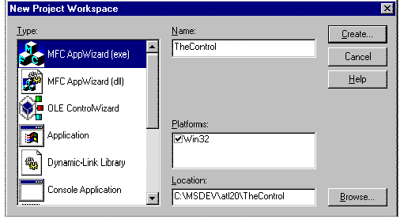

|
| ||
|
| ||
Steve Robinson and Alex Krasilshchikov
Panther Software
Like every good storyteller, we have saved the best for last, and in this case it is nonfiction. Our next step will be the most fun, and we will see the fruits of our previous labor. We are going to put a sink interface in an ActiveX™ control (our control will be called TheControl), place TheControl in Internet Explorer, and have it connect to TheServer automatically. When ThePusher sends a new value to TheServer, TheControl will change colors right before your eyes. Without further ado, let's get started.
In the previous section, we declared an IConnectionPoint interface in TheServer and implemented an IConnectionPointContainer in TheServer. Just to recap, an IConnectionPointContainer is declared and implemented in a server. An IConnectionPoint is declared in a server's IDL file so that a server's IConnectionPointContainer can have knowledge about a connection point type that it can contain. However, the sink interface IConnectionPoint wraparound is actually implemented in the client. To keep it simple: An IConnectionPointContainer has the ability to hold a pointer to an outside object. In COM terminology this is called a Sink. TheControl will be an ActiveX control with a sink.
In Visual C++®, create a New Project Workspace. Select OLE ControlWizard in the Type list box and give the project the name TheControl. Before clicking the Create button, take a quick look at the following dialog box to make sure you have everything set up properly. Once again, we are placing this project's primary folder next to TheServer's primary folder to make it easier to include specific files. Now click Create, and move to Step 1 of the OLE ControlWizard.

The first thing we need to do to TheControl is add the required include files. Like ThePusher project, TheControl project needs to include ATL declarations and certain declarations from TheServer.
Open stdafx.h and add the following lines:
//declaration files for ATL base classes #include <atlbase.h> //external linkage for CComModule extern CComModule _Module; //ActiveX Template Library include #include <atlcom.h> //idl declaration file for the server #include "..\TheServer\TheServer.h"
Like ThePusher, TheControl will also have an instance of CComModule that will have external linkage. Recall that CComModule implements a COM server module, thus allowing a client access to the server's components, and that CComModule supports both in-process servers (.DLL files), and out-of-process servers (.EXE files), whether they are local or remote servers.
Again, if you are programming in Windows NT 4.0 or later and have installed Visual C++ Patch 4.2b, make sure you add the line #define _WIN32_WINNT 0x0400 at the top of stdafx.h. Your stdafx.h file should look very similar to the stdafx.h file that comes with the sample code.
Open stdafx.cpp and add the line #include <atlimpl.cpp> immediately after #include "stdafx.h," which implements the majority of the ATL COM library. Next, open TheControl.cpp and add the following lines immediately after the defines for _DEBUG:
#define IID_DEFINED //idl implementation file #include "..\TheServer\TheServer_i.c" //our com module declared in stdafx.h CComModule _Module;
This code, as you saw in ThePusher, defines IID_DEFINED, and includes the CLSIDs declared in TheServer_i.c, which was generated by the Microsoft Interface Definition Language (MIDL) compiler when we built TheServer, and that declares our CComModule. If you update all dependencies, you will see the following files added to the Dependencies section of the Project Workspace window:
While you have TheControl.cpp file open, let's initialize _Module, which we declared in stdafx.h, by calling CComModule's Init member function, and which initializes all data members of the CComModule class. Your InitInstance function should appear as follows:
BOOL CTheControlApp::InitInstance()
{
BOOL bInit = COleControlModule::InitInstance();
if (bInit)
{
// TODO: Add your own module initialization code here.
_Module.Init(NULL, NULL);
}
return bInit;
}
Select Rebuild | All and make sure TheControl compiles, creates links, and registers correctly.
The next item on our agenda is to create a class that will be a sink in TheControl. As pointed out, a pointer to a sink interface gets passed to a connection point container in a server. A server that has the connection point container can use this outgoing interface like a C-style callback function. Create a new file called MySink.h, or if you desire, copy MySink.h from the sample project.
Either way, let's review the code in this new class that appears below:
#ifndef MYSINK_H
#define MYSINK_H
//forward declaration of our control class
class CTheControlCtrl;
class CMySink :
public IDispatchImpl<IMySinkID,
&IID_IMySinkID,
&LIBID_THESERVERLib>,
public CComObjectRoot
{
public:
BEGIN_COM_MAP(CMySink)
COM_INTERFACE_ENTRY(IDispatch)
COM_INTERFACE_ENTRY(IMySinkID)
END_COM_MAP()
STDMETHOD(SinkReceiveData)(long lValue);
void SetOwner(CTheControlCtrl* pTheControl);
private:
CTheControlCtrl* m_pTheControl;
};
#endif
The first item you notice is the forward declaration of CTheControlCtrl, is our ActiveX control class. This class is declared here so we can use it in the CMySink class. At the bottom of CMySink, there is a class member that is a pointer to CTheControlCtrl. By placing a pointer to CTheControlCtrl in this class, we can use our control class as the owner of this class when an object of CMySink is created, which is exactly the purpose of the SetOwner function.
CMySink is derived from two base classes. IDispatchImpl, as noted earlier, provides a default implementation for IDispatch. CComObjectRoot, also discussed earlier, handles object reference count management for this COM object. The BEGIN_COM_MAP macro marks the beginning of the COM interface map entries and exposes interfaces in this COM object through QueryInterface. There are two COM interface entries in this object's map, one for IDispatch and one for IMySinkID. IMySinkID was originally declared in TheServer.idl to give TheServer's IConnectionPointContainer knowledge of this connection point sink type. The definition ID for IID_IMySinkID is in TheServer_i.c. (This file is included in TheControl.cpp.) The function SinkReceiveData is also declared in this file since we are going to implement this method in TheControl.
Open the file TheControl.h and add the following lines immediately after the class declaration so that your class begins as follows:
class CTheControlCtrl : public COleControl
{
private:
//brush for changing the control color
CBrush m_BkgBrush;
//advise holder
DWORD m_dwAdvise;
//interface pointer to the server
CComPtr<ITheServerComObject> m_pITheServerObject;
//for connecting
void ConnectToTheServer();
//for creating advise sink
void CreateSinkAdvise();
//to disconnect advise sink
BOOL UnAdviseSink();
public:
//public access for changing color
void ChangeColor(long lValue);
There is a general comment about each of these members, but let's take a closer look at a few of them:
Open TheControlCtrl.cpp and scroll down to the class constructor. In the constructor where you see the traditional To Do…, add the following lines:
m_dwAdvise = 0; m_pITheServerObject = NULL; ConnectToTheServer(); if(m_pITheServerObject != NULL) CreateSinkAdvise();
As always, start by initializing the member variables in conformance with safe programming habits. Next, call ConnectToServer and, if the interface pointer to TheServer's COM object is valid, we will create an Advise sink. (We will implement all these functions in just a minute.)
In the class declaration we have a CBrush object that needs to be initialized. Use ClassWizard to add an OnCreate member function and add the following line immediately after the To Do… statement so that a solid red brush is created:
// TODO: Add your specialized creation code here m_BkgBrush.CreateSolidBrush(RGB(192,0,0));
In the OnDraw function that is already declared, replace the default drawing function with the following single line. Therefore, when first displayed the control will be red.
pdc->FillRect(rcBounds, &m_BkgBrush);
Now let's work on the methods we declared in our class. The first method we will implement is ConnectToTheServer. ConnectionToTheServer will utilize CoCreateInstanceEx, setting our m_pITheServerObject so that it holds an interface pointer to the COM object in TheServer application. CoCreateInstanceEx is the big brother of CoCreateInstance, and allows one to set the remote server location dynamically, bypassing the registry. For example, you could prompt the user for the IP address of the server before connecting. The code below demonstrates the user of CoCreateInstanceEx passing NULL as the remote server name, implying that the registry default will be used. The code for ConnectToTheServer is below with an explanation of the new variables for CoCreateInstanceEx:
void CTheControlCtrl::ConnectToTheServer()
{
USES_CONVERSION;
//declare a QI struct so we can obtain more than one
//interface at a time if we need multiple interfaces
//in one class id
MULTI_QI QI[1];
//the IID of the first interface
QI[0].pIID = &IID_ITheServerComObject;
QI[0].pItf = NULL;
QI[0].hr = S_OK;
//create a COSERVERINFO struct to hold machine
//name resource
COSERVERINFO si;
si.dwReserved1 = 0; //not used
//pass a url here such as 1.0.0.1 or UNC name
si.pwszName = T2W("P200sr"); //Steve's computer
si.pAuthInfo = NULL; //not used
si.dwReserved2 = 0; //not used
HRESULT hRes = S_FALSE;
hRes = ::CoCreateInstanceEx(
//class id just like in CoCreateInstance
CLSID_TheServerComObject,
//The controlling unknown
NULL,
//CLSCTX context
CLSCTX_ALL,
//CoServerInformation or NULL if local machine
NULL, //&si,
//number of interfaces we are requesting
1, //1 interface in our MULTI_QI struct
//array to hold our return values
QI);
//check return values
ASSERT(hRes == S_OK);
if(hRes != S_OK)
return;
//get our interface pointer
m_pITheServerObject = (ITheServerComObject*) QI[0].pItf;
ASSERT(m_pITheServerObject != NULL);
}
The next function we will implement is CreateSinkAdvise. CreateSinkAdvise is called from our constructor after ConnectToTheServer returns, if m_pITheServerObject is valid. CreateSinkAdvise uses the ComObject template class to create a class of our type CMySink. We are calling this instance pSink since it will be the outgoing sink interface in TheServer's CConnectionPointContainer. Once the sink is created, it is passed to TheServer using the AtlAdvise method. Also, when the sink is created, we are going to call its SetOwner function, passing the control object pointer (this) as our owner. The code for CreateSinkAdvise and CMySink's SetOwner method follows:
void CTheControlCtrl::CreateSinkAdvise()
{
ASSERT(m_pITheServerObject != NULL);
CComObject<CMySink>* pSink; //create a sink
CComObject<CMySink>::CreateInstance(&pSink); //declare instance
ASSERT(pSink != NULL);
pSink->SetOwner(this);
HRESULT hRes = AtlAdvise(m_pITheServerObject, // the server object
pSink->GetUnknown(), // our sinks unknown
IID_IMySinkID, // iid
&m_dwAdvise);
//the cookie
if (FAILED(hRes))
{
ASSERT(FALSE);
}
TRACE("Advise sink success\n");
}
void CMySink::SetOwner(CTheControlCtrl* pTheControl)
{
m_pTheControl = pTheControl;
}
CTheControlCtrl's method for disconnecting from TheServer, UnAdviseSink, calls AtlUnadvise and decrements the connection count. It is equally straightforward and appears as follows:
BOOL CTheControlCtrl::UnAdviseSink()
{
HRESULT hRes = AtlUnadvise(m_pITheServerObject,
IID_IMySinkID,
m_dwAdvise);
BOOL bRet = SUCCEEDED(hRes);
if(!bRet)
AfxMessageBox("Sink Unadvise failed");
return bRet;
}
In this example, the appropriate time to disconnect TheControl from TheServer is when TheControl is destroyed (for example, you close down Internet Explorer and unload a page in the browser). We will also use OnDestroy for selected housekeeping, like deleting our brush. Accordingly, use ClassWizard to create OnDestroy, and implement it as follows:
void CTheControlCtrl::OnDestroy()
{
UnAdviseSink();
COleControl::OnDestroy();
m_BkgBrush.DeleteObject();
}
We are almost finished. Recall that a method exists in CMySink called SinkReceiveData. Also recall that TheServer's CTheServerComObject has a method called PushDataIntoSink, and PushDataIntoSink iterates through all sinks in a list calling each sink's SinkReceiveData method. The pSink in CTheServerComObject we reference is the sink residing in TheControl! Hence, we need not only to implement it because is declared in CMySink, but also to make the method useful by passing the value that the method receives up to the sink's owner. Consider the following code that you should add to the bottom of TheControlCtrl.cpp:
STDMETHODIMP CMySink::SinkReceiveData(long
lValue)
{
if (m_pTheControl != NULL)
{
m_pTheControl->ChangeColor(lValue);
return (HRESULT)S_OK;
}
else
return (HRESULT)S_FALSE;
}
When we created our sink instance in CreateSinkAdvise, we set its m_pTheControl member to the control class object instance. When SinkReceiveData is called from TheServer, the method will forward the value to its owner, CTheControlCtrl. All we need is a public function called ChangeColor that takes a long value. We already declared ChangeColor in the CTheControlCtrl.h declaration file. Implement ChangeColor as follows so that it will change the color of TheControl.
void CTheControlCtrl::ChangeColor(long lValue)
{
COLORREF color;
switch(lValue)
{
case 2:
color = RGB(192,0,192);
break;
case 1:
color = RGB(192,192,0);
break;
default:
color = RGB(0,192,0);
}
m_BkgBrush.DeleteObject();
m_BkgBrush.CreateSolidBrush(color);
InvalidateControl();
}
Before we compile we need to add #include "MySink.h" to the beginning of the file so it knows about our sink object. Select Rebuild | All and make sure your control gets registered so we can use it with Internet Explorer.
Are you ready to see your control in action? Start Microsoft ActiveX Control Pad. If you installed it to the default directory, it should be located at C:\Program Files\ActiveX Control Pad\PED.EXE. On the menu, click Edit | Insert ActiveX Control. A dialog box should appear, listing all the controls registered on your computer. Scroll down the list box until you find the item titled TheControl Control. Double click this item so that it creates the control in the default HTML page created when ActiveX Control Pad was started. Save the file as page1.htm in your computer someplace convenient, so you can easily relocate it through Internet Explorer (perhaps on your desktop). Start Internet Explorer and drag and drop the file page1.htm, which you just created with ActiveX Control Pad, into the client area of Internet Explorer. When the control loads, it warns you about security issues (covered in many other articles). Select Yes to All and the page should load TheControl. You will see a red rectangle. (If you don't see the control, lower Internet Explorer's security level to medium and reload it.)
The next step is to start ThePusher. Once you have started ThePusher, set the values between 0 and 2 and click the Push Value button in order to push them into TheServer. There is no need to start TheServer. It is started when either the TheControl or ThePusher calls CoCreateInstance. Within Internet Explorer, the ActiveX control will change colors whenever you change the value in ThePusher. A quick look in a mirror shows the smile on your face letting you know you are off and running with your first set of DCOM-based programs.
Remember to watch out for the kidnappers who take skilled programmers. They often arrive dressed up as Panthers.
Panther Software is a software development and consulting company based in Hermosa Beach, California. The company specializes in ActiveX technologies such as DCOM, COM, and ActiveX control development on Win32 platforms and can be reached at www.panthersoft.com.
Did you find this material useful? Gripes? Compliments? Suggestions for other articles? Write us!
© 1999 Microsoft Corporation. All rights reserved. Terms of use.